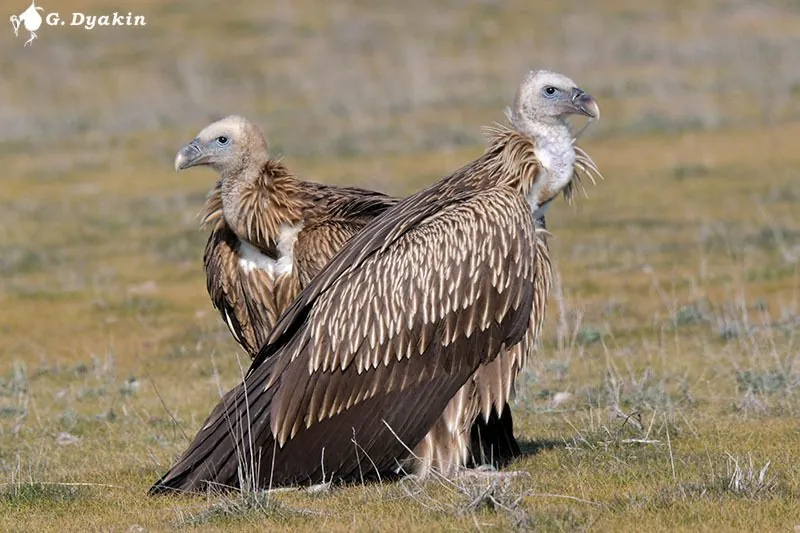

鸟类 · 动物界
高山兀鹫 Gyps himalayensis

青藏高原常见的大型食腐猛禽，颈部有一圈浅黄色的羽领，常借上升气流在雪山间盘旋寻找动物尸体。
- 分类
- 门脊索动物门纲鸟纲目鹰形目科鹰科属兀鹫属
- 栖息环境
- 青藏高原的高山、峡谷与草原，常在悬崖岩壁上营巢
- 地理分布
- 青藏高原、喜马拉雅山区和中亚高山，中国西藏、青海、四川西部与新疆南部常见
- 保护级别
- IUCN 近危（NT）；中国国家二级保护动物
物种志
高山兀鹫体长 103–120 cm，体重 8–12 kg，翼展 260–310 cm，是体形巨大的猛禽。它的头颈部裸露，皮肤呈浅黄白色，颈基有一圈蓬松的浅黄色羽领，身体和翅膀为沙褐色至深褐色，飞羽黑色，尾短呈楔形。翅膀宽大而长，翼指明显，适合在高空长时间滑翔。
高山兀鹫主要分布于青藏高原、喜马拉雅山区和中亚的高山，在中国西藏、青海、四川西部、新疆南部常见，是高原上数量最多的食腐鸟类之一。它们以大型动物尸体为主食，会成群在山地上空盘旋，发现尸体后先由体型大的个体取食，随后其它个体跟进。繁殖期在悬崖岩壁上集群营巢，每窝产卵 1 枚，孵化约 50 天，育雏期长达数月。由于兽药残留和食物减少，其种群受到威胁，中国将其列为国家二级保护动物。
形态与习性
- 食性大型动物尸体为主，偶尔捕食小型动物
- 体长103–120 cm
- 体重8–12 kg
- 翼展260–310 cm
- 繁殖每窝 1 枚卵，孵化约 50 天
- 寿命野外约 20–30 年
- 生态作用清理动物尸体，减少疾病传播
趣味知识
- 高山兀鹫颈基的浅黄色羽领十分醒目，是辨认它的重要特征。
- 它们能借上升气流在数千米高空滑翔数小时，几乎不拍动翅膀。
- 高山兀鹫常成群在悬崖边等待，尸体一出现很快就会聚集。
- 它们是高原生态系统的“清道夫”，能防止动物尸体传播疾病。